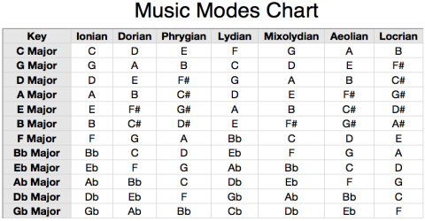

Ma-Ma FC
This page is a guide to learning
Ma-Ma FC on a tapping instrument such as the
Chapman Stick or the acoustic Dragonfly DFA.
There is a score/tablature, fretboard diagrams, and
(to be done) youtube video instructions, that will help you along the
way.
You don't need to know how to read music. In fact, you can
get 90% of the way there just by watching the videos and referring
to the Fretboard diagrams, and playing the song on
the Musecore web page.
The videos to go along with this piece are at this youtube playlist
Ma-Ma FC tappetizer playlist
A bit of background about the piece
- This is a Riff Oriented Piece similar in style to tradtional west african (e.g. Mali)
music. It's in the Key of Bb Major. On the Melody side you may regard it as employing F Mixolydian
(the 5th mode of Bb Major) in parts of the song (such as the intro).

- Take a listen to a few versions of this piece. This version
by the classical guitarist Derek Gripper is one of my favorites. Another duo version is
Here
Musescore score with tabs
The Score (and tabs) to go along with the diagrams below is available
Here
Look for the ones with names that start with the Ma-Ma.
This is the authoritative one
which is for twelve string Matched reciprocal tuning
How to play loops on the musescore web site
Elemental Structure of the Piece
This Piece is a simple Motor played in the left hand with
some simple melodic riffs played over the top. you'll see the Riffs
are indicated with section markers in the Musecore/Tabs as [A] , [B], [C], etc..
Fretboard Diagrams
The diagrams that illustrate the piece